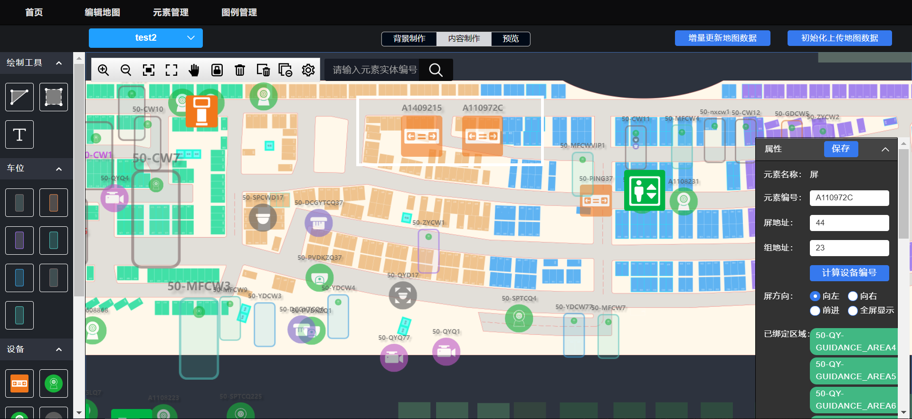

对绑定区域的引导屏进行区分 业务说明：
（1）对未绑定区域和已绑定区域的引导屏在引导屏的元素编号背景色上做区分；未绑定区域的元素编号背景为透明的，已绑定区域的元素编号背景色为红色。已绑定区域：不区分方向，不限制是否绑全，只要绑定了一个区域，即默认用元素编号背景色（红色）标记为是已绑定区域的引导屏。
（2）增加引导屏每个方向都支持颜色的设置，刚生成屏元素时默认全屏为红色，用户可针对每个方向修改颜色(可设置红绿蓝三种颜色)，
（3）若在后台设置了具体的条件设置颜色，则以后台设置为准，若后台无设置，则以地图编辑器的设置为准。


绑定区域
已绑定区域：